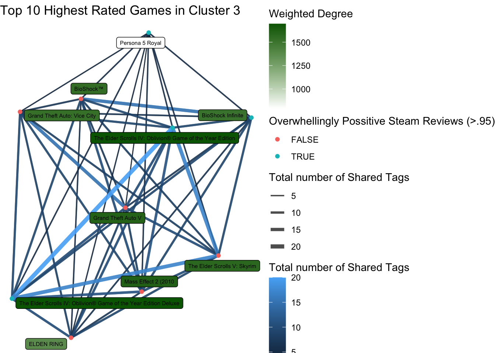

Steam Network
For this component I have displayed the network of the top 10 highest rated games on Metacritic in general and in each cluster from the cluster analysis. Metacritic is a platform that averages critic score for video games, it is a lot like Rotten Tomatoes.
Variables
For the edges the variable I used were tags, specifically the number of shared tags between each game. Tags are user suggested words or short phrases that describe each game. The color and width of each edge is determined by the number of shared tags.
The other variable displayed on the network is a boolean node variable which records if a game’s steam reviews are overwhelmingly positive. On Steam a user can rate a game with either a thumbs up or down, if 95% or more of the reviews are a thumbs up the game marked as having overwhelming positive reviews. The data set gives the number of positive user reviews and negative user reviews, I divided positive reviews by the sum of positive user reviews and negative user reviews to get the percentage. The node is colored red if the percentage is below 95% but blue if it is.

This image shows the steam page of my favorite game and one visualized in some of these networks, Portal 2. This shows how you would see the variables used in these networks when browsing the steam store, and what they look like.
Disclaimer: The network for Cluster 1 is not shown due to inapproprate results
General Top 10 Network
The network shows a few interesting things about the top Metacritic rated games. One thing I noticed was action games in famous high budget series like Grand Theft Auto and The Elder Scrolls had higher degree centrality while games in other genres like the Portal 2 and Persona 5 had much lower degree centrality. This shows the tendency of these large budget action games to get high Metacritic scores. The average weighted degree is 1093.8 which is higher then many any of the cluster’s average weighted degree, this shows that the top rated games on Metacritic are similar in their own ways.
Cluster 2

Thus network has a average weighted degree of 874.2 which is much reasonably high when compared to other clusters. Only one of these games is overwhelmingly positive on steam - Bloons TD 5, this game also has a notably high weighted degree. The game Konung 2 has the lowest weighted degree in this network and is tied for the lowest degree on any network. It seems that most of the top rated games in the cluster are generally similar as seen by the average weighted degree to each other except Konung 2 and are not considered to be excellent games except for Bloons TD5.
Cluster 3

This network has a higher range of weighted degree then any other cluster, with a weighted degree of 1494.2. Many of these games are reviewed as being overwhelmingly positive. The games in this network are over represented in the top 10 games showing that this type of game (one that has high age requirements, price, and recommendations) is predisposed to succeed critically. The high average weighted degree suggests there is a sort of formula in terms of the types of games that make it into this cluster and get high metacritic ratings.
Cluster 4

This network has a very low weighted degree of 337, the lowest of any cluster. None of these games are reviewed as being overwhelmingly positive. The degree of these nodes vary wildly, with Perimeter 2 having only one edge and a very low weighted degree while Everreach has a much higher weighted degree then any other game in the network, showing considerable variation in terms of tags for this cluster. This shows that highly rated games from this cluster have not much to do with each other and are not very well liked by the steam community.
Cluster 5
This network has a reasonably small weighted degree of 753.4. It has by far the most number of games rated Overwhelmingly Positive by the steam community. Most of these games have a high weighted degree except Team Fortress 2, suggesting it is a bit of an outlier in the top games of this cluster. This network shows that the of the highest rated games in cluster 5 are very well liked and have diverse play styles as seen by their comparatively small average weighted degree.